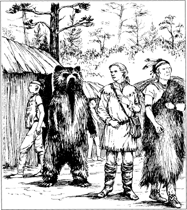
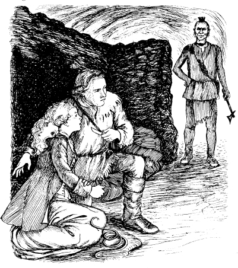

Listen to Part 1:
Uncas không sợ. Người Huron chạy quanh anh. Họ hét lên. Họ kéo anh về phía tòa nhà gỗ. Uncas nhìn thấy Duncan bên ngoài tòa nhà.
‘Mắt Ưng an toàn lắm, Uncas,’ Duncan nhỏ nhẹ nói. Sau đó người Huron đưa Uncas vào nhà họp.
Duncan đi bộ qua làng. Anh xem xét trong các ngôi nhà. Không ai ngăn cản anh. Không ai hỏi bất kỳ câu hỏi nào. Nhưng Duncan không tìm thấy Alice và Cora.
Anh quay trở lại nhà họp. Anh đi vào trong. Uncas đang đứng và các tù trưởng đang ngồi. Duncan cũng ngồi xuống. Anh ngồi gần bức tường.
Sau đó, một người Huron khác bước vào tòa nhà. Đó là Magua! Magua không nhìn thấy Duncan. Nhưng ông ta thấy Uncas. Ông ta hét lên, ‘Mohican, mày phải chết!’
Magua rất tức giận. Ông ta quay sang các tộc trưởng. ‘Nhiều người Huron đã chết ở Thác Glenn,’ ông ta nói. ‘Người Mohican này là kẻ thù của chúng ta!’
Magua và hai người Huron đưa người Mohican trẻ ra khỏi nhà họp.
Sau đó, một trong những tù trưởng nói với Duncan. ‘Thầy thuốc, vợ của một trong những người đàn ông của tôi bị bệnh – cô ấy ốm. Anh có thể chữa khỏi cho cô ấy không?’
‘Dẫn tôi đến chỗ người phụ nữ đó,’ Duncan nói.
Anh đi theo tộc trưởng ra khỏi nhà họp. Họ đi về phía một ngọn đồi. Có một hang động trong ngọn đồi.
Listen to Part 2:
Duncan nhìn thấy một con gấu theo sau họ. Nhưng anh không sợ. Người da đỏ thích gấu. Họ thường nuôi gấu trong làng của họ.

Duncan đi theo tộc trưởng vào hang động. Hang động rộng lớn và có nhiều phòng có tường đá. Tộc trưởng đưa Duncan vào một căn phòng. Người phụ nữ bị bệnh đang nằm trên sàn đất. Một số phụ nữ khác đang ở bên cô. Duncan nhìn người phụ nữ bị bệnh. ‘Cô ấy sắp chết,’ anh nghĩ.
Tộc trưởng Huron chờ đợi và nhìn Duncan.
Duncan quay sang tộc trưởng Huron. ‘Tôi phải riêng tư với người phụ nữ bị bệnh này,’ anh nói. ‘Thuốc của tôi là bí mật. Hãy đi cùng những người phụ nữ này. Chờ bên ngoài.’
Tộc trưởng và bốn người phụ nữ rời khỏi hang động.
Vài phút sau, con gấu bước vào hang động. Con gấu kêu lớn. Duncan nhìn con gấu. Một lần nữa, con gấu kêu lớn. Nó tiến về phía Duncan. Đột nhiên, nó cởi bỏ đầu! Đó là Mắt Ưng! Mắt Ưng đang mặc một tấm da gấu!
‘Cái gì—?’ Duncan nói. Sau đó anh cười. ‘Tại sao lại mặc đồ da gấu?’ anh hỏi.
‘Tôi tìm thấy tấm da gấu trong nhà của một người Huron,’ Mắt Ưng nói. ‘Bây giờ người Huron sẽ không ngăn cản tôi. Nhưng hãy nói cho tôi biết. Cô Alice ở đâu?’
‘Tôi thật không may. Tôi đã không tìm thấy Alice hoặc Cora. Và Uncas là tù nhân của người Huron.’
Listen to Part 3:
‘Magua đã đưa cô Cora đến làng của người Delaware,’ Mắt Ưng nói. ‘Tôi đã nghe hai người Huron nói về cô ấy. Chingachgook và Munro đều an toàn trong rừng.’
Sau đó Mắt Ưng nghe thấy tiếng động. Ông ấy nhìn qua một bức tường đá. ‘Cô Alice ở trong phòng bên cạnh!’ ông ấy nói.
Duncan đi vào phòng kế bên. Có một số chăn, vải và da động vật trong phòng. Và có Alice. Tay và chân cô bị trói bằng dây thừng. Mặt cô tái mét. Cô ấy sợ hãi.
‘Duncan!’ cô ấy nói. ‘Anh ở đây.’
‘Ừ,’ Duncan nói. Anh cởi trói tay và chân cô.
‘Cora ở đâu?’ Alice hỏi, ‘Cha tôi đâu?’
‘Cha cô an toàn. Ông ấy đang ở với Chingachgook,’ Duncan nói.
‘Còn Cora?’ Alice hỏi lại.
‘Cô ấy ở gần đây. Cô ấy ở một ngôi làng khác,’ Duncan nói. ‘Cô ấy ở với người Delaware.’
Đột nhiên, có người bước vào phòng. Đó là Magua!
Listen to Part 4:
